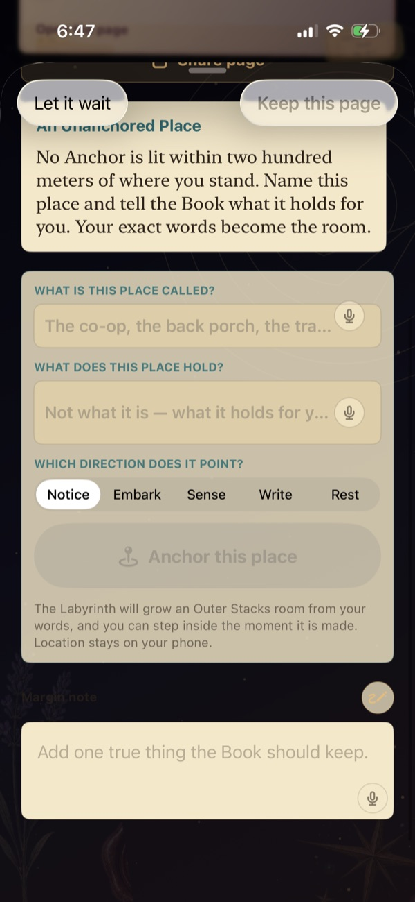
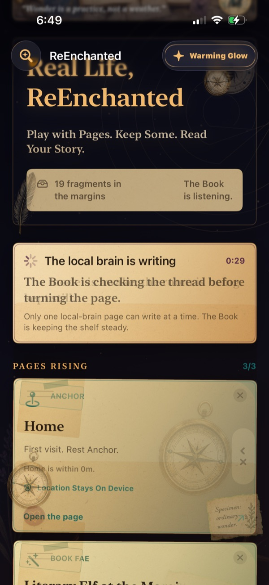
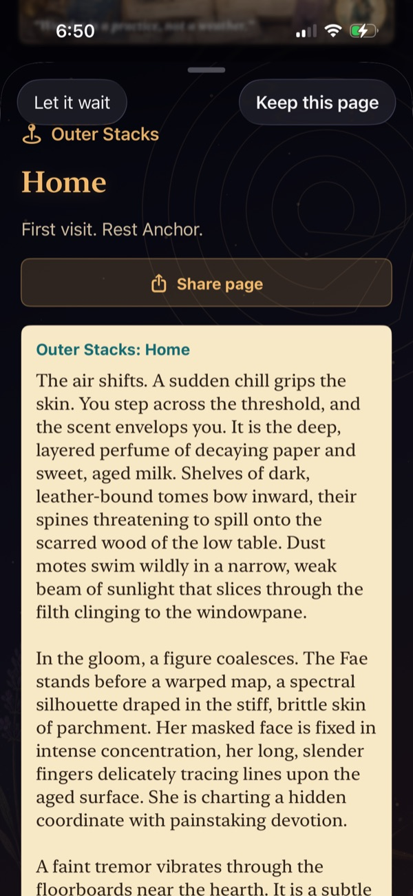
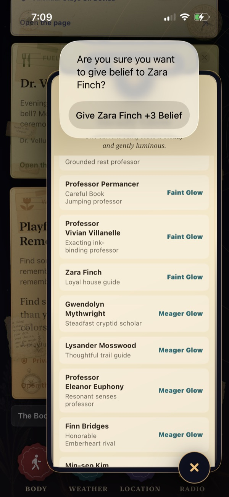
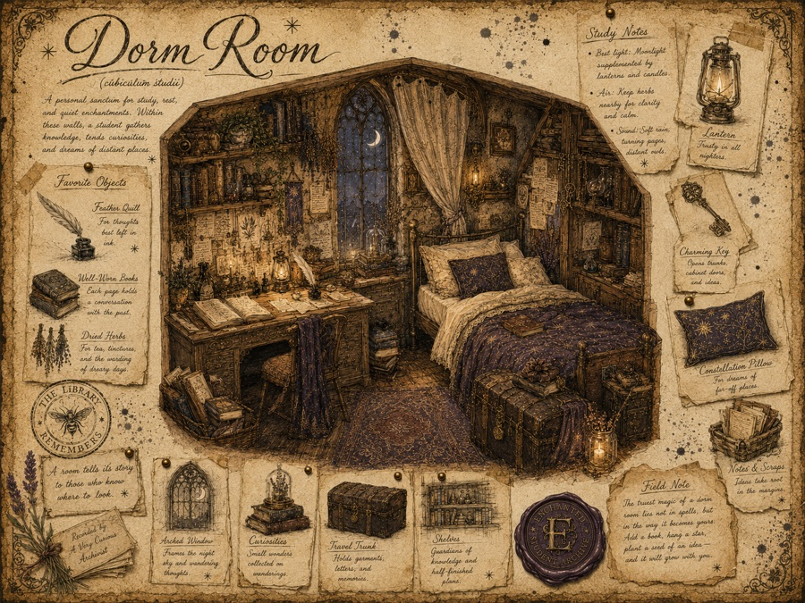
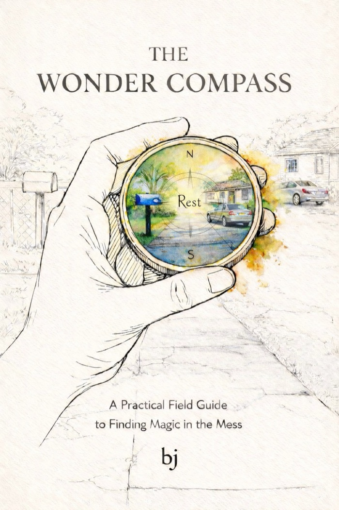
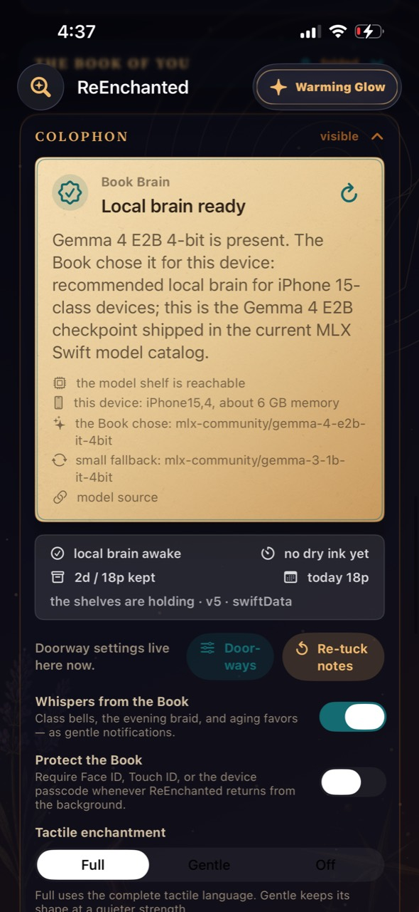
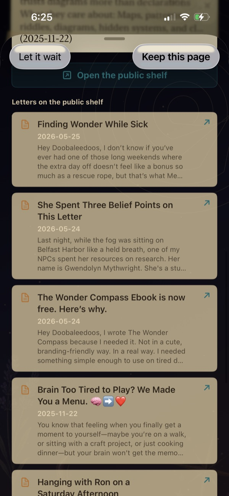

Pages arrive
The day shows up as little doors: weather, body signals, places, music, questions, one-sentence souvenirs, photos. No blank page, no streak to defend.
A living book for ordinary days
Play with Pages. Keep Some. Read Your Story.
An iPhone book that turns the day you actually lived — weather, walks, moods, music, the people who pass through — into pages you can keep. Keep what's true. Let the rest wait. Watch it braid into a story only you could write.
Play with it
This is the real thing, in miniature. Turn the pages, keep the ones that catch a real edge, let the others wait — then bind your choices into a Book of You.
Weather
Outer weather is translated into story mood while keeping the actual forecast legible.
Public reference
7 pages rising · keep the ones that are true
 Kept
Kept
Your binding
Braided from the pages you kept.

A real Book of You page.
This is one month. A year of kept pages becomes an edition you can hold.
Start your own →Tip: keep a few, let some wait — your choices change the ending.
How it works
The day shows up as little doors: weather, body signals, places, music, questions, one-sentence souvenirs, photos. No blank page, no streak to defend.
Keep a page when it catches a real edge. Let the rest wait. The Book is built on consent and taste — you choose what becomes part of the story.
Kept pages don't vanish into a feed. They gather into patterns, characters, and monthly and annual bindings you can return to and hold.
Inside the Book

A steady belief state, gently luminous. Open a Compass Run or an Enchantment and let an ordinary subject speak.

Reframe familiar streets and routines until they're legible again. Walk. Notice. Record. Return.

Music, broadcasts, and world effects become weather in the stacks — atmosphere you can keep.
The book remembers
Underneath the pages, three quiet mechanics decide what returns, what looms, and what the Book keeps. They run on device, on real life.




Watch the loop
Stand somewhere real, name what it holds, and choose how it points. The Book writes that spot its own room in the Outer Stacks, remembers the weather and the moon — and every time you return, it adds Belief.
Bind a real place — a blue mailbox, a back stair, a shoreline — as an anchor you Notice, Embark, Sense, Write, or Rest at. Return to it and the Book remembers the weather, the moon, the season, and the small rule that place taught you.
A gentle economy, not a score. Kept pages and visited anchors feed it; it warms and cools day to day. Belief is how the Book decides something has started to matter to you.
Every person, place, and motif carries a weight. Belief and weight together decide what rises, how large a figure looms in your constellation, and which thread the Book pulls forward next.
Not a chatbot — a world
Underneath the Book is a narrative simulation: a magical Academy in an infinite library, with classes, clubs, faculty, professors — and a headmistress you probably shouldn't fully trust.


The cast have personalities, quirks, faults, beliefs, goals, and secrets — and a real interest in the actual places and things in your life. They aren't waiting for a prompt.
They act with or without you:
You can invest Belief right back, take sides, and tip the balance. Or just watch the Headmistress watch you.

Playable scenes the Book writes by braiding what actually happened with the choices you make — finding relation between separate lives until a day takes on shape, shelter, or mischief.
Pages with another hand in them. The old-law Fae offer terms; you pay in Belief. Take the deal and something moves — but a bargain is never quite free, and it remembers.
Not every meeting is a bargain. You can parley with the Fae of the margins — though they may answer with rules instead of manners, and the rules tend to stick.
Story Pages weave your ordinary life with your fictional choices until the whole thing reads like a faerie tale — not the Disney kind, but the older, more dangerous one, where the woods keep what you promise them.
The whole point
The best-written chapter in the entire book — the most sensory, the most alive — is your own ordinary life.
Everything else is rails and atmosphere. You are the text.
ReEnchanted Radio
An analog station page for Academy broadcasts, music packs, and world effects. Turn the dial, find a frequency, and go on air.
The signal arrives giggling, tasting of clover honey and warm afternoons.
Sun-dappled beats and dandelion synths from faeries who have plainly had too much nectar.
World effect · Wonder Compass +8 · Souvenir +8 · Festival +6
Included free
Routine got you bored? Lonely? Have a dentist appointment?
The full Wonder Compass ebook comes with the app — free. Twenty-six chapters on how to live in wonder again, woven right into the shelves so it's there the moment the day goes flat.

The shelf keeps growing
Themed expansions that drop a whole world into the Book at once — and the Academy itself shifts week to week. The base game stays whole; packs are for when you want more to keep.
New happenings arrive week to week and month to month — visiting faculty, festivals, weather in the stacks, bargains that tap at the glass. Open the Book on a Tuesday and something is different.
Real device magic
The most personal app on your phone shouldn't feel like a surveillance product. ReEnchanted uses explicit doorways for body, weather, location, calendar, and sources. It can run on a local brain, on device — and export your continuity whenever you want the shelves in your own hands.

And it's open source — read it, audit it, fork it. The whole Book is yours.
* The only thing we'll ever surface is our own Patreon page, quietly pointing to the newest articles. Nothing else is for sale in here.

The margin is already listening
Play with pages. Keep some. Read your story.
Real Life, ReEnchanted